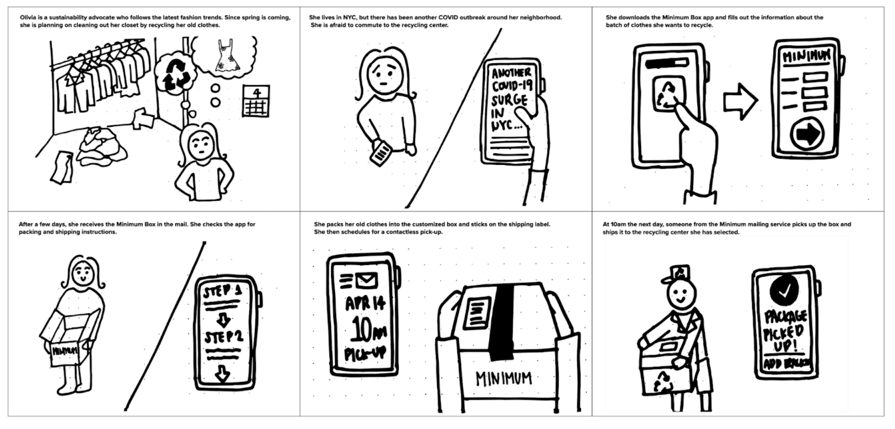
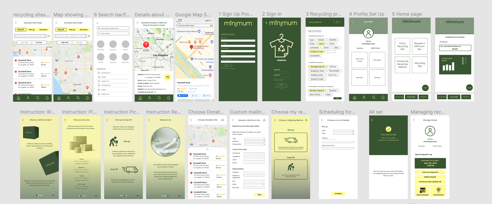

Clothing Recycling Platform
How might we help users have the most convenient experience through different recycling options in order to eliminate extra clothes?
We first started the design process by defining the problem and researching our target users, their needs, goals, and experiences. We delved into principles of inclusive design to ensure that accommodating features are incorporated. We then conducted user interviews to learn more about people’s recycling experiences, challenges, and awareness. At the same time, we launched a survey to uncover recycling preferences, habits, and attitudes in order to further discover areas of opportunity and needs. While analyzing both qualitative and quantitative results by creating an empathy map, an affinity map, and visualizing survey data, we also conducted a competitive analysis comparing existing nonprofit and for-profit clothing recycling organizations given that they could be our potential partners. As we continued to refine our problem statement, we developed a persona based on the findings.
Initial Divergent Ideas

Convergent Top 3 Ideas

In the next phase of the design process, we generated both divergent and convergent ideas and sketched out potential solutions corresponding to our persona’s scenarios. After confirming the direction of our design, we created lo-fi prototypes in Figma. Using a few essential screens and two sets of screens with our main features (Location Finder and Minimum Box), we crafted out research plans and conducted usability tests with Gen Z and Millennial participants. During these sessions, we collected data on the overall flow, reactions, subjective rating, think-aloud misconceptions, and suggestions for the user experience. Integrating user as well as peer feedback, we continued iterating our design and turned the lo-fi prototypes into hi-fi prototypes ready to be presented to stakeholders.
Storyboard Example

Quantitative Findings

Qualitative Findings

Through our usability testing for the Location Finder feature, we learned that participants generally perceived the app to be overall clear, well-organized, and thoughtful. However, some icons and buttons were misleading such that participants thought clicking on the “Go” button would lead them to begin navigation, yet it would in fact direct them to Google Maps where they would have to click on “Get Direction” again. This frequent manual switch of views was confusing to users. To iterate, each button should be clarified by explicitly indicating “View in Maps” instead. We would also need to include both list view and map view of the locations in one screen. Finally, we could include hours and review scores briefly within the list view items.
Through our usability testing for the Minimum Box feature, we learned that participants perceived the app to be convenient and liked the simplified categories for clothing. They believed it to be innovative as most indicated that they would be using the app to make their recycling process easier. However, the “You’re all set” screen came before the scheduling pick-up screen which made it unclear because they were technically not all set at that point. Some also found the instructions on the form confusing such as clothes amount, box size, etc. Having both pick-up and drop-off on the same screen also did not clearly direct actions. To improve the flow and experience, we would need to iterate the elements in the form (make pick-up and drop-off collapsable, add auto-fill address for scheduling, make screen scrollable, etc.). Lastly, we should unify the language use as well as the visual aspects to ensure clarity and prevent misconceptions.
Initial Hi-fi Prototype

Documentation of Iteration (Lo-Fi to Hi-Fi)
- Add home button or exit button for all screens
- Four swipe screens before form to explain the box, how it works, narrow down to 5 sizes; make these skippable
1. What is the Minimum Box
2. Different sizes available, how much would fit in each, dimensions, estimates
3. Pick up vs drop off options
4. 2-3 business days to arrive, label comes with the box
- Managing Orders: Make green square clickable and make a separate screen for available actions
- Add drop shadow for buttons
- Combine “Thank you” and “You are all set” (two different screens for pick up or drop off)
- No “Date and Time” for drop off -> specify drop off at any UPS location
- Shipping labels will be sent with the box; in the “Thank you” page, include something like “We have sent you an email confirmation. We will send you a box along with the shipping label”
- Change “GO” to “view in maps”
- Add filter feature in search
- Add List view under map view (Show address, rating, name, open or closed)
- Add arrow back to minimum app on google maps screen